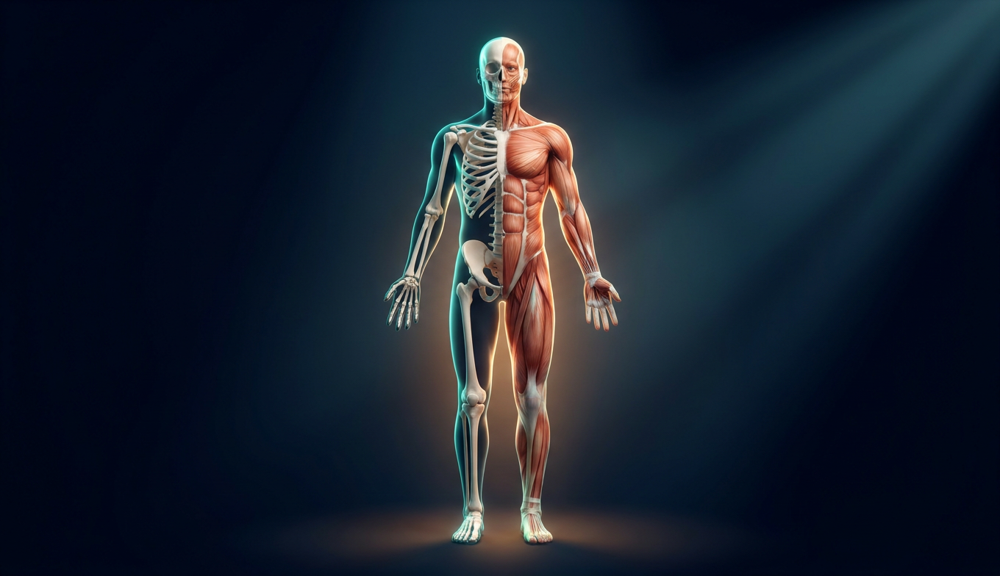
206 костей, 360 суставов и 600+ мышц — шасси, шарниры и приводы. Лучший композитный материал планеты и живой такелаж, который перестраивает сам себя под нагрузку.
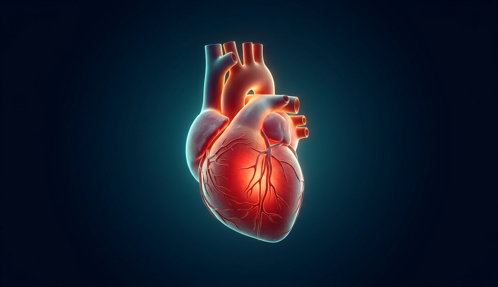
Насос размером с кулак, сто тысяч километров труб и пять литров жидкости, которая одновременно грузовик, курьер, батарея отопления и армия. Всё это не останавливается ни на секунду десятилетиями.
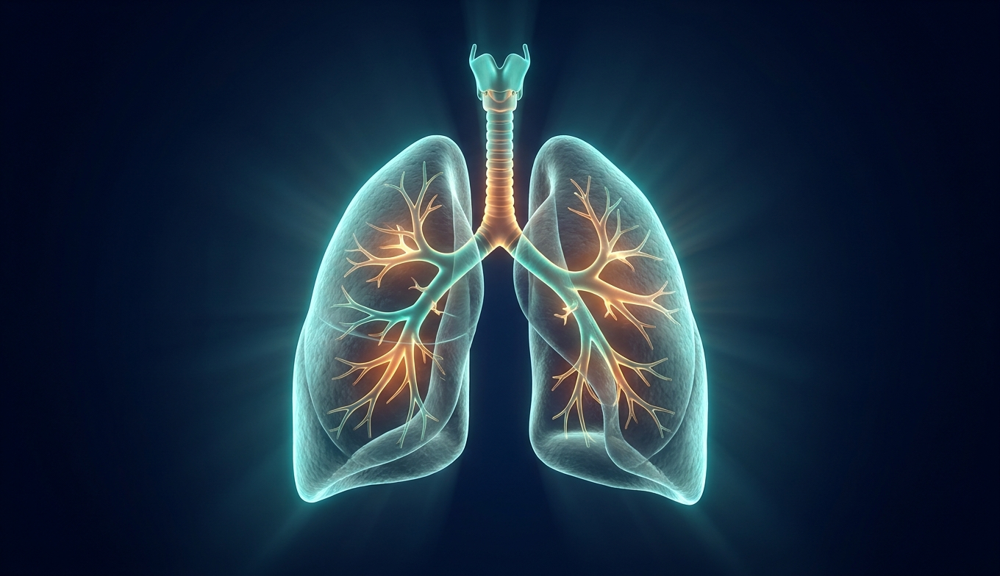
Перевёрнутое дерево из 23 уровней ветвления, крона которого — 700 миллионов пузырьков с суммарной площадью теннисного корта. И всё это складывается в грудную клетку.
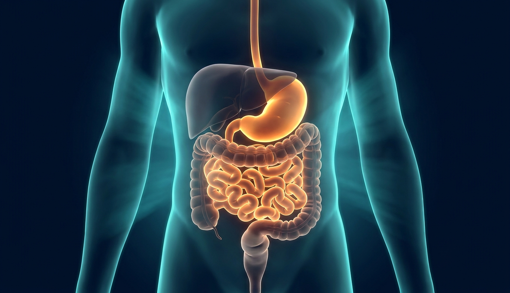
Девять метров конвейера, кислота, растворяющая металл, химзавод на 500 функций и десять квадратных метров всасывающего ковра. Обед проходит этот маршрут за полтора-двое суток.
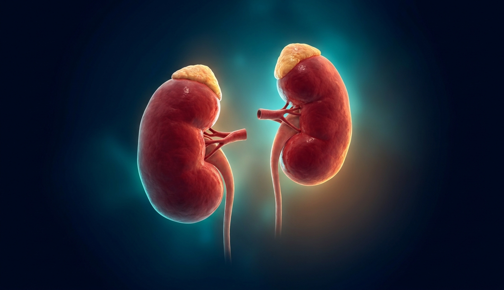
Две фасолины, которые прогоняют через себя всю кровь 60 раз в сутки и решают, что оставить. И двухметровый скафандр, который чинит сам себя и меряет температуру за бортом.
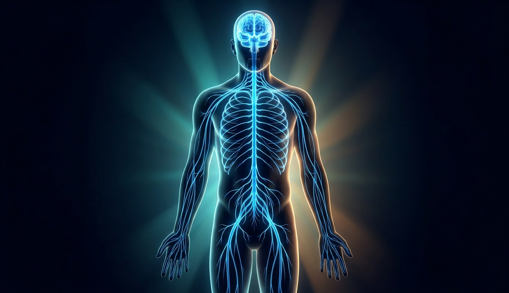
Центральный процессор, магистральный кабель в бронеканале и разводка до каждого квадратного миллиметра тела. Про сам мозг у нас есть отдельная дека на 35 слайдов — здесь разберём именно ПРОВОДКУ: как сигнал бежит и кто дёргает за провода.
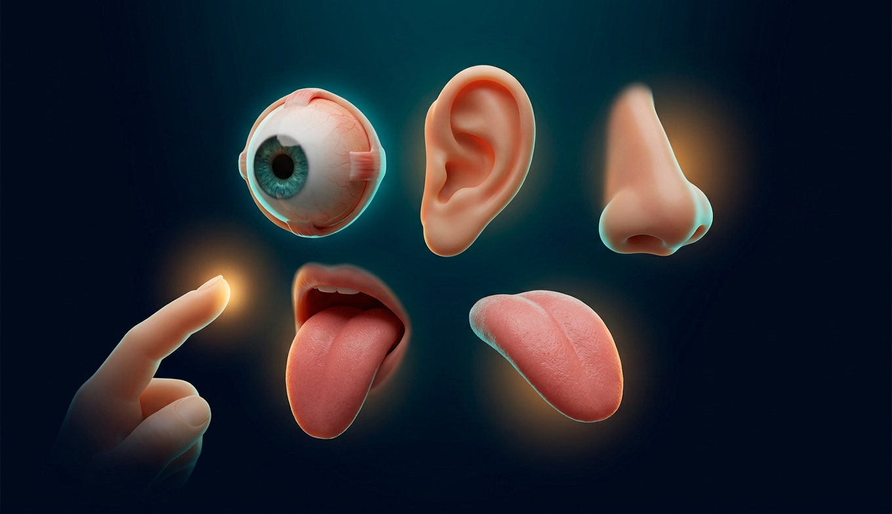
Две камеры с автофокусом, микрофон с механическим усилителем из трёх косточек, химический анализатор на миллион запахов и сенсорная панель на всё тело. Разбираем два флагманских устройства — глаз и ухо.
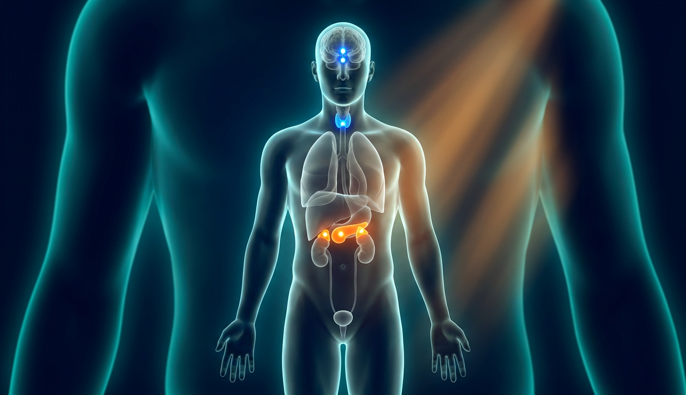
Кроме быстрой нервной проводки в теле есть вторая сеть управления — медленная, широковещательная, химическая. Несколько граммов желёз рулят ростом, обменом, стрессом, сном и настроением.
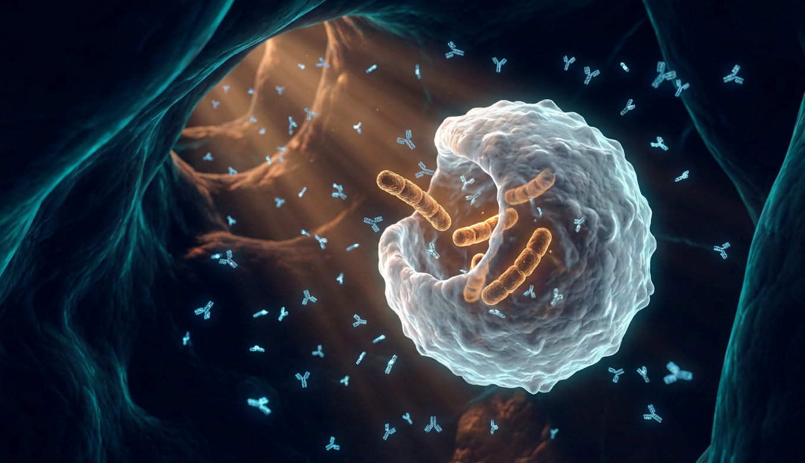
Параллельно кровеносной в тебе проложена вторая, тихая сеть — лимфатическая: дренаж, таможня и казармы. А в костях день и ночь работает завод, штампующий два миллиона клеток крови в секунду.
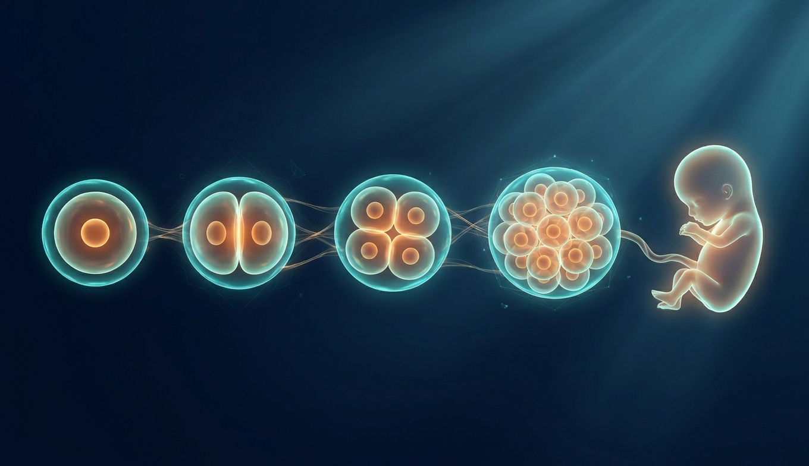
Единственная система, без которой можно прожить самому — но не виду. И единственный процесс, где из одной клетки за девять месяцев самособирается всё, что мы разбирали девять глав.
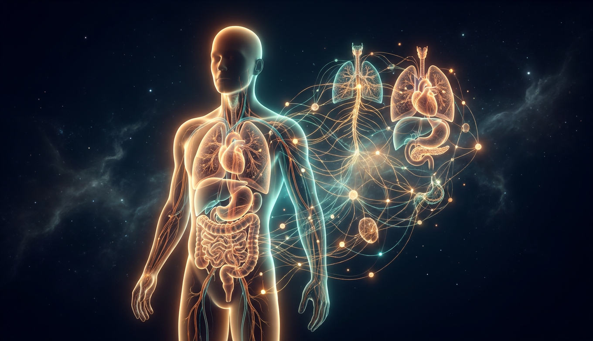
Пока ты листал эту деку, сердце ударило три тысячи раз, костный мозг выпустил четыре миллиарда эритроцитов, почки профильтровали пару литров крови, а кишечник продвинул ужин на полметра. Ни одним из этих процессов ты не управлял — и ни один из них ни разу не спросил твоего мнения.